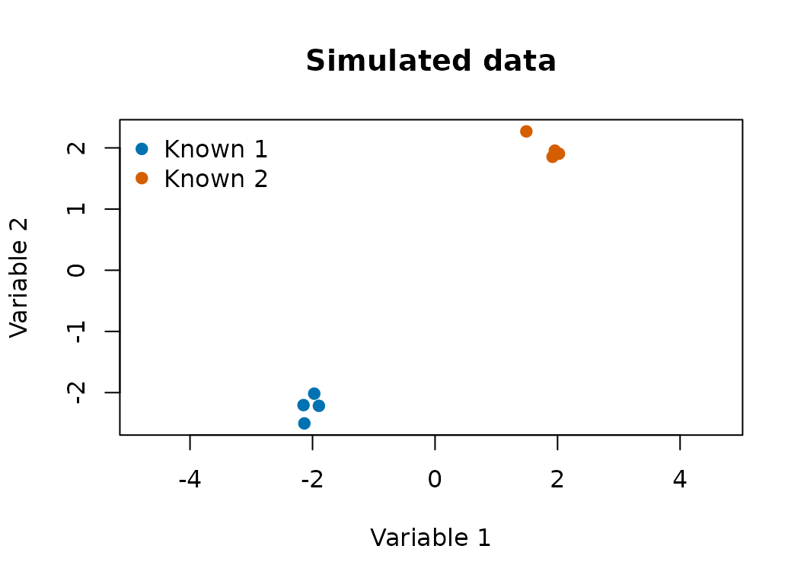
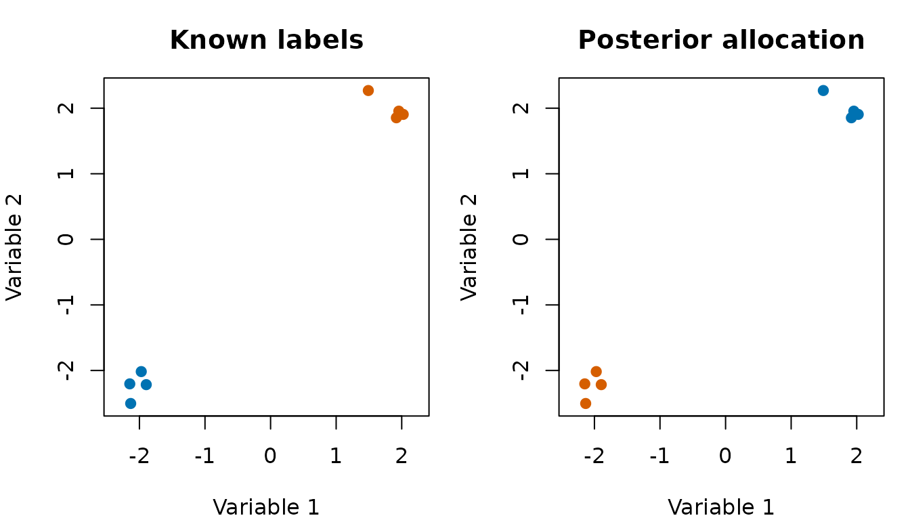

This example gives a complete, runnable bpgmm analysis.
It is small enough to build quickly on CRAN and pkgdown, but it uses the
same functions as a larger analysis. The focus is the structure of one
fitted object; model-selection interpretation is handled separately.
Simulate a small clustering problem
pgmm_rjmcmc() expects a numeric matrix with variables in
rows and observations in columns. The code below creates two
well-separated clusters in two dimensions.
library(bpgmm)
#> bpgmm 1.3.4 loaded. If you use bpgmm in published work, please cite it with citation("bpgmm").
set.seed(2026)
X <- cbind(
matrix(rnorm(8, mean = -2, sd = 0.2), nrow = 2),
matrix(rnorm(8, mean = 2, sd = 0.2), nrow = 2)
)
known_labels <- rep(1:2, each = 4)
dim(X)
#> [1] 2 8
known_labels
#> [1] 1 1 1 1 2 2 2 2
cluster_cols <- c("#0072B2", "#D55E00", "#009E73")
plot(
X[1, ], X[2, ],
col = cluster_cols[known_labels],
pch = 19,
xlab = "Variable 1",
ylab = "Variable 2",
main = "Simulated data",
asp = 1
)
legend(
"topleft",
legend = paste("Known", sort(unique(known_labels))),
col = cluster_cols[sort(unique(known_labels))],
pch = 19,
bty = "n"
)
Fit a fixed-model chain
This fit keeps and the covariance model fixed, so the output structure is explicit. The fitted likelihood contribution is
For model selection across and covariance labels, use the separate model-selection vignette. The augmented likelihood term for an allocated observation in cluster is
with and . See the model-and-sampler vignette for the full Gibbs and RJMCMC formulas.
fit_log <- capture.output({
fit <- pgmm_rjmcmc(
X = X,
m_init = 2,
m_range = c(1, 3),
q_new = 1,
burn = 1,
niter = 3,
constraint = "UUU",
m_step = 0,
v_step = 0,
verbose = FALSE
)
})
tail(fit_log, 1)
#> character(0)The returned object stores posterior samples for allocations, covariance constraints, component parameters, and hyperparameters.
Summarize posterior samples
summarize_pgmm_rjmcmc() returns the modal allocation,
posterior counts for the number of clusters, posterior counts for
covariance models, and optionally an adjusted Rand index.
fit_summary <- summarize_pgmm_rjmcmc(fit, true_cluster = known_labels)
fit_summary$allocation
#> [1] 1 1 1 1 2 2 2 2
fit_summary$n_clusters
#>
#> 2
#> 3
fit_summary$n_constraints
#>
#> UUU
#> 3
fit_summary$ari
#> [1] 1The modal allocation is computed coordinate-wise from the saved posterior allocations:
where is the number of saved posterior samples.
old_par <- par(mfrow = c(1, 2), mar = c(4, 4, 3, 1))
plot(
X[1, ], X[2, ],
col = cluster_cols[known_labels],
pch = 19,
xlab = "Variable 1",
ylab = "Variable 2",
main = "Known labels",
asp = 1
)
plot(
X[1, ], X[2, ],
col = cluster_cols[fit_summary$allocation],
pch = 19,
xlab = "Variable 1",
ylab = "Variable 2",
main = "Posterior allocation",
asp = 1
)
par(old_par)Inspect component parameters
The sampler stores draws of , , , and . For this fixed-model example, the final saved draw is enough to show the object shape.
last <- length(fit$tau_samples)
fit$tau_samples[[last]]
#> [1] 0.1844265 0.8155735 0.0000000
fit$mean_samples[[last]]
#> [[1]]
#> [,1] [,2]
#> [1,] -2.339545 -1.881641
#>
#> [[2]]
#> [,1] [,2]
#> [1,] 1.116826 1.319229
#>
#> [[3]]
#> [1] NA
lapply(fit$lambda_samples[[last]], dim)
#> [[1]]
#> [1] 2 1
#>
#> [[2]]
#> [1] 2 1
#>
#> [[3]]
#> NULL
lapply(fit$psi_samples[[last]], dim)
#> [[1]]
#> [1] 2 2
#>
#> [[2]]
#> [1] 2 2
#>
#> [[3]]
#> NULLScale the example to real data
For an applied analysis, keep the same sequence of steps but use larger sampler settings. The exact values depend on data size and convergence diagnostics.
fit <- pgmm_rjmcmc(
X = your_data_matrix,
m_init = 2,
m_range = c(1, 10),
q_new = 4,
burn = 5000,
niter = 15000,
constraint = model_to_constraint("UUU"),
m_step = 1,
v_step = 1,
split_combine = 1,
verbose = FALSE
)
summarize_pgmm_rjmcmc(fit, true_cluster = known_labels)What to report
For a concise analysis report, include:
- the data orientation and preprocessing choices;
-
m_range,q_new, starting covariance model, and whetherm_step,v_step, andsplit_combinewere enabled; - the number of burn-in and posterior iterations;
- the posterior modal allocation or a co-clustering matrix;
- ARI only when a reference partition is scientifically meaningful.
The diagnostics vignette gives examples of trace plots and co-clustering summaries for multiple chains.